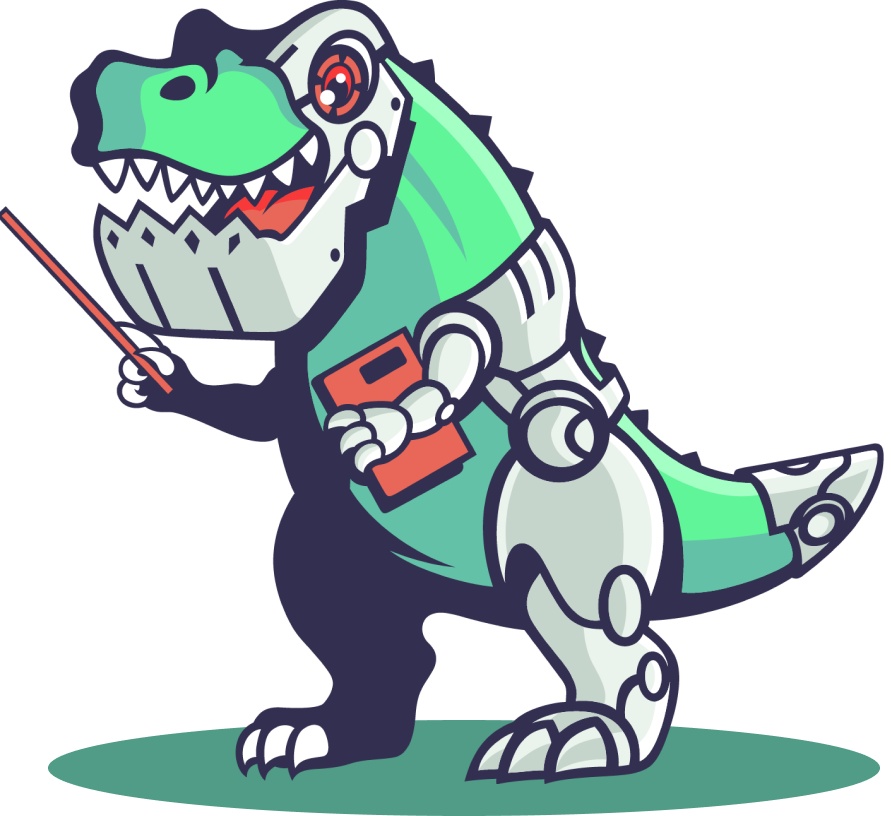
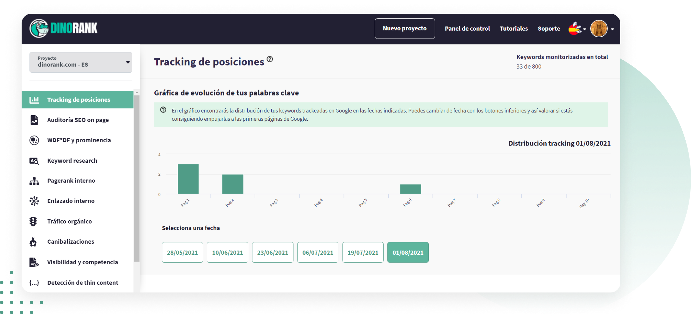
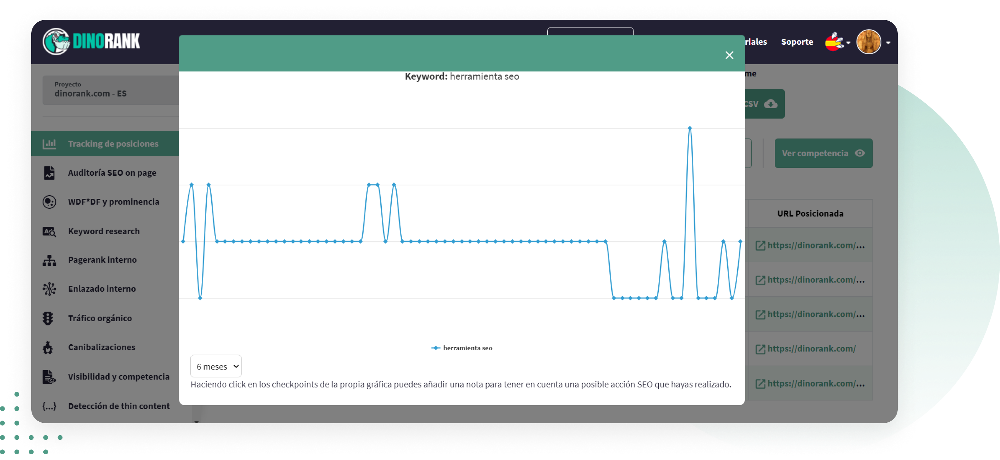

Controla el movimiento y la posición de tus keywords en los resultados de búsqueda de Google
Obtén una gráfica completa del movimiento de tus competidores para una keyword, con el tracking de posiciones de DinoRANK

Es algo muy básico, pero lo que no se mide no se puede mejorar. Y menos en el ámbito SEO.
¿Cuántas veces te has acabado tu día con el subidón de haber mejorado la posición de tu web o la de tu cliente?
Pero, cuando revisasas el proyecto, ha bajado 2 o 3 puestos... O peor. Ya no está en la primera página de las SERPS... Pánico, cabreo...
Y es que Google es así. Y tu competencia se mueve con el mismo objetivo que tú, escalar posiciones.
Por eso necesitas una herramienta que te ayude a detectar errores, a enterarte lo antes posible si ha pasado algo nuevo para actuar rápido y ahorrar tiempo después.
El Tracking de Posiciones monitoriza la posición de tu web en el ranking, te avisa si hay fluctuaciones y te dice cómo posicionan tus competidores en tiempo real
Esto es lo que te ofrece:
Trackea keywords por clúster y ordénalas por carpetas.
Gráfica de comportamiento y fluctuación de una keyword.
Gráfica de todos tus competidores de las SERPS para una keyword.
Tracking geolocalizado y descarga de informes.
Muestra la posición real de tu web en las SERPS de Google.
Opción de trackear las URLs individuales de tu sitio web.
Hiperpreciso, basado en nuestro propio sistema de proxys.
Sencillo de usar y de entender en el que no te perderás.
Y todo esto con una usabilidad extremadamente fácil.
Cómo funciona el Tracking de Posiciones
1. Gráfica de evolución de las palabras clave.

-
Te muestra cómo se mueven las palabras clave en los resultados de búsqueda de Google.
-
Cada columna se corresponde con una página de resultados y la altura indica el número de keywords que tienes en esa página.
-
Puedes retroceder semana a semana para comprobar su evolución.
Controla si hay movimientos bruscos para que analices las causas y lo puedas corregir rápido.
2. Tabla de tracking de palabras clave.
Las opciones que da esta parte de la herramienta son muchísimas y muy útiles.
-
Añades las keywords que quieras controlar.
-
La herramienta te indica si hay canibalizaciones para esas keywords.
-
Tienes un calendario para ver lo que ha sucedido en un periodo tiempo o ver si te ha afectado un update.
-
Puedes destacar las keywords que más te interesa controlar.
-
Si tu proyecto es muy grande, hay un buscador para que encuentres cualquier palabra clave.
-
Puedes copiar al portapapeles todas las palabras para hacer tus informes.
-
La tabla te indica las keywords que suben y las que bajan.
-
Puedes ver la situación real de la competencia de los dominios con los que estás compitiendo por palabras clave y llevártelos al módulo de Visibilidad para analizarlo con más detalle.
-
Tienes la opción de descarga en archivo CSV con todos los datos de la tabla y también en PDF.
-
Puedes agrupar las palabras clave y también por las URLS, para controlar que todas están posicionando por la keyword que tú quieres.
-
El símbolo flechas cruzadas, indica la evolución, histórico de las URLs de tu competencia que posicionan por esa keyword.
-
En la gráfica individual del movimiento de una keyword puedes añadir notas.
-
Te muestra la evolución de esa keyword tanto para PC como para móvil.

-
Indica el volumen de búsquedas de la posición actual, de día anterior, la comparativa de la mejor posición que se ha conseguido y la posición en la que estaba al comienzo del proyecto.
-
Indica la URL por la que posiciona cada palabra.
-
Puedes definir alertas para recibir avisos cuando haya movimientos en tu keywords para evitar sobresaltos y realizar las acciones que consideres.
Localiza a tus rivales en las SERPS.
Conoce que hacen para ver
cómo puedes superarles.
El Tracking de Posiciones es muy concreto y preciso para que ahorres tiempo en analizar los movimientos de tus keywords.
Es más fácil de usar y es igual o más completo que otras alternativas. Además te da toda la información en español.
Testimonios de usuarios de DinoRANK
Opiniones de clientes que usan DinoRANK en su día a día para mejorar su visibilidad.
“Es imposible hacer SEO sin los datos que DinoRank proporciona.
Ha optimizado mucho nuestro trabajo en la agencia, tanto a la hora de hacer SEO on Page, como para ver el progreso de nuestros clientes y el rendimiento de cada recurso.
La mayor ventaja es poder ver todos los problemas de una página con un sencillo análisis.
También nos ayuda a hacer seguimiento del posicionamiento de las palabras clave y a conocer con detalle el CPC y la competencia de cada palabra clave.”

María Ponsoda
CEO Seoriginalsweb.com
“La gran virtud de Dinorank es que es una herramienta SEO muy económica pero también muy completa.
Cuando inicias un proyecto intentas contener los gastos usando mil y una herramientas gratuitas para analizar las métricas de tu web. Con Dinorank, no tengo que saltar de herramienta en herramienta.
Su Keyword research ha cambiado mi manera de afrontar la redacción de los posts. La cantidad de palabras clave derivadas y la rapidez con las que se logran, me enamoró desde el primer momento.
La funcionalidad que más me ha sorprendido es el Tracking de posiciones. Es muy útil para controlar la evolución de mis keywords y ver cómo reacciona la competencia.”
Francisco Marhuenda Sala.
Webmaster laguíadelchollo.com
“Gracias a DinoRANK, he aprendido a distribuir el PageRank y los niveles de clicks para dar fuerza a las partes que más me interesan de mi página web.
Antes no sabía lo importante que es la distribución de un buen interlinking dentro de mis proyectos.
Reviso continuamente el tracking de posiciones para ver como aumenta la visibilidad de mi web gracias al balance de mejora que he implementado con esta Suite.
He aumentado el posicionamiento de mi página web para las palabras clave más fuertes y más importantes de mis proyectos.
DinoRANK me ha ayudado de forma muy visual e intuitiva a desarrollar una mejora del SEO On Page de mi web, a enriquecer los textos gracias al estudio de la competencia y hacer una auditoría de 0 a 100 que nada tiene que envidiar a Crawlers y/o herramientas SEO de precios bastante más elevados.”

Sergio Cordero
sergiocordero.net
“Mi proyecto ha crecido en tráfico, autoridad y posicionamiento en palabras clave superimportantes para mi negocio. A pesar de haber trabajado con otras, la magia de WDF*DF y prominencia para saber, en un solo vistazo, lo que deben tener mis artículos a nivel de estructura es brutal y no necesito tener profundos conocimientos SEO.
Al principio dudé por ser menos conocida que Semrush o Ahrefs pero he conseguido rankear en los primeros lugares de Google para KW con intencionalidades de búsqueda muy competidas.
DinoRANK es intuitiva. Te dice en un solo vistazo la estructura que deberían tener tus artículos para posicionar por encima de la competencia.”

Marja Morante
Copywriter en marjamorante.com
“Tengo varios proyectos, y me ha sido muchísimo más fácil encontrar nuevas keywords para posicionar y saber por las que ya estaba posicionando.
Hago keyword research para mis proyectos y de mis clientas casi a diario. La auditoría la uso muchísimo tanto para posibles clientes, como para controlar mis proyectos.
Y la función de visibilidad es genial. Poder ver keywords de otras webs sin tener acceso a su search console.
Mi web principal está subiendo visitas y me estoy posicionando en keywords muy interesantes. He comenzado un proyecto poco y ya está consiguiendo tráfico orgánico interesante, sin haber invertido en linkbuilding, solo con optimización de contenidos.
Con DinoRANK es muy fácil hacer keyword research, la auditoría completa del sitio y la visibilidad.”

Raquel García Arévalo (Taisa)
Informática especializada en diseño web en WordPress https://www.taisa-Designer.com
“Probé Dinorank para 3 de mis páginas web, dos de ellas son nichos y una, mi proyecto principal.
No esperaba que por ese precio me diera tanto. Al principio dudé de si sería buena, pero tras probar Semrush, Ahrefs, Ubersuggest, ninguna me ha enamorado como Dinorank.
La uso a diario para hacer seguimiento de las keywords. La función de prominencia semántica ha sido un gran sorpresa, me ha permitido escalar posiciones muy rápido y me ha generado un incremento en los ingresos de la WEB.
Ver a golpe de click toda la estructura y fuerza interna de la página, poder realizar de manera sencilla una auditoría de SEO on Page o detectar canibalizaciones... me parece brutal.
Además, es la primera suite SEO todo en uno que he probado que te hace sentir en su comunidad y partícipe del proyecto, y lo valoro mucho.
Probé un mes y tengo claro que ya no me voy de Dinorank. Es una herramienta sencilla, completa, a bajo coste y que te hace llevar tu proyecto a dónde quieras, facilitándote la vida.”
Fabio Serna
https://www.opinionde.online/
“DinoRank me ha facilitado con acciones sencillas y concretas qué puedo mejorar de mi web, ahora sé que hacer para potenciar las URLs que más me interesan posicionar en mi web.
Al inicio vi una herramienta tremendamente simple y eso me hizo dudar (precio asequible y a la vez interfaz muy visual y aparentemente sencilla). Ahora veo que eso no excluye que sea tremendamente potente y útil para realizar acciones concretas y efectivas.
Me gusta mucho el Trakeo de posiciones para ver cómo influyen mis acciones, las cuales las planifico con la herramienta WDF*DF.
Gracias a la herramienta de Canibalización y las indicaciones que te da DinoRank he conseguido que Google de peso a la URL pensada para atacar determinadas KW y no perder el potencial de cada una de ellas.”

Albert Rodríguez
Socio fundador www.capelli.es
“DinoRANK me ha ahorrado mucho tiempo y he conseguido posicionar ya muchas keywords potenciales y genéricas.
Dean lleva aportando muchos años, por eso la probé y aquí sigo.
Las funciones que más uso son el tracking de posiciones y optimización de contenido en base a las recomendaciones de keywords según la competencia mejor posicionada. La auditoría que ofrece también es muy práctica.
Con DinoRANK gano tiempo y hago subir posiciones a mis clientes.”

Elena GC.
Freelance Marketing Online
Suscríbete a DinoRANK por 19,90 €/mes (precio anual), o por 25 €/mes, si te suscribes meses sueltos